From counts to statements about chance
Organize observations, compare shares, and explain what a sample or a probability model can tell us.
Counting observations and estimating chances
We can study commuting habits, late deliveries, and even predictions of the next word in a sentence by counting outcomes and comparing their frequencies.
A sample provides observations about a group, while a probability model assigns chances to possible outcomes. Both use shares of a whole, but the denominator and its interpretation differ. We will use fictional survey results and model probabilities to work through that distinction.
Who or what are we trying to describe?
Suppose a college wants to know how its students get to campus. Surveying all 1,600 students would be expensive, so it asks 80. The larger group is the population; those who answer form the sample.
The population is the whole group we want to learn about. The sample is the group actually observed. If a college has 1,600 enrolled students and asks 80 of them about their travel, the population is all 1,600 students. The sample is the 80 who answer.
A variable is what we record for each observation: perhaps usual travel method or travel time in minutes. One person can supply both a category and a measurement.
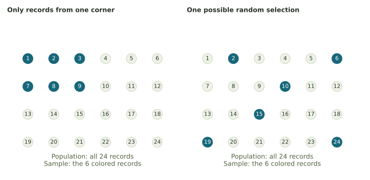
How the sample is selected
Asking only people standing at the bicycle rack is likely to include many cyclists. Even 500 answers collected there could miss students who park elsewhere, arrive later, or study online.
For a simple random sample of 80, every possible group of 80 students has the same chance of being chosen. One way is to use a complete student list and randomly choose 80 different names.
Even well-selected random samples differ because they contain different people. A sample is biased when the method systematically favors some members over others. For instance, surveying only at the bicycle rack can overrepresent cyclists regardless of how many people answer.
To learn about all library visits during a month, a researcher records visits on one Friday afternoon. Name the population, the sample, and one limitation.
Compare your reasoning
The population is all visits during that month. The sample is the recorded Friday-afternoon visits. Other days and times are missing, so their patterns may be underrepresented.
Frequency: count how often each answer appears
A frequency is a count. A frequency table puts each answer beside the number of times it appears. The frequencies should total the number of responses.
One preferred study location per person
Twenty-five students each choose one location. Eleven choose the library, nine choose home, and five choose a café.
| Study location | Frequency |
|---|---|
| Library | 11 |
| Home | 9 |
| Café | 5 |
| Total | 25 |
The check is 11 + 9 + 5 = 25, matching the number of responses. Each student contributed one answer, so the counts add to 25.
Numbers can be answers too. For the pet counts 0, 1, 1, 2, 0, 1, the frequencies are 2 for zero pets, 3 for one pet, and 1 for two pets. Zero pets is a recorded answer; it is not a missing response.
When someone can choose more than one answer
If a survey allows multiple answers, a person can appear in more than one category. In our examples, each person selects one answer.
For the answers red, blue, red, green, blue, red, make a frequency table and check its total.
Compare your reasoning
Red occurs 3 times, blue 2 times, and green 1 time. The total is 3 + 2 + 1 = 6 responses.
Relative frequency: what share of the whole?
A frequency gives a count, but a relative frequency describes how common that result is within a group. Divide its count by the total number of recorded observations. The resulting proportion can be written as a fraction, decimal, or percentage.
The denominator is the total number of observations. For the library, divide 11 by 25: 11/25 = 0.44. Multiply the decimal by 100 to get 44%. All three represent the same share of the sample.
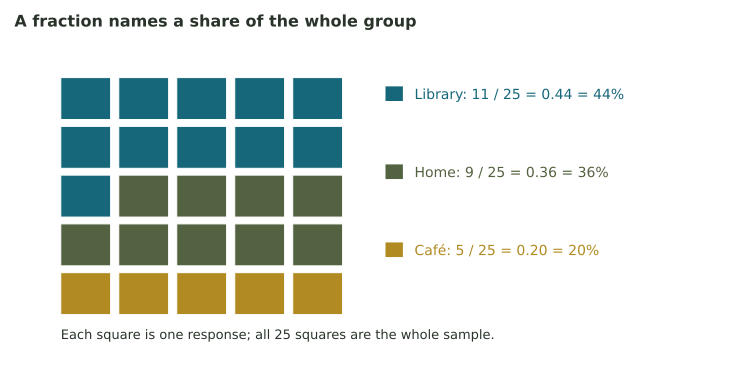
| Location | Fraction | Decimal | Percentage |
|---|---|---|---|
| Library | 11/25 | 0.44 | 44% |
| Home | 9/25 | 0.36 | 36% |
| Café | 5/25 | 0.20 | 20% |
| Total | 25/25 | 1 | 100% |
The exact fractions add to 1 because all 25 answers are included once. Rounded decimals may add to something like 0.999 instead. For exact calculations, use the fractions before rounding. If the sample has no observations, there is no relative frequency to calculate: division by zero does not give a share.
Eight of 40 recorded answers are in one category. Write its share as a fraction, decimal, and percentage.
Compare your reasoning
8/40 = 1/5 = 0.20 = 20%. The count is 8; the share is 0.20.
Comparing groups of different sizes
Suppose 6 of 10 people in one group answer yes, while 12 of 30 in another group answer yes. The second group has more yes answers, but it is also three times as large.
Comparing the proportions
First group: 6/10 = 0.60 = 60%. Second group: 12/30 = 0.40 = 40%. Yes is more common as a share of the first group, even though the second group has more yes answers.
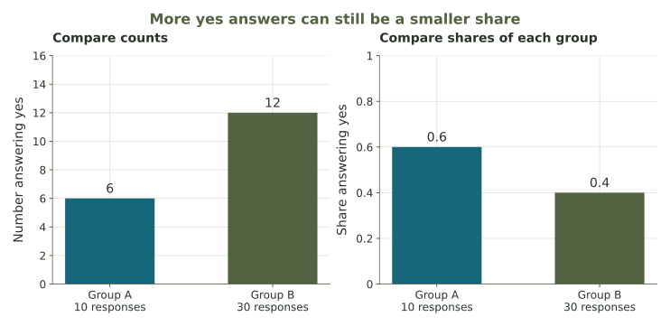
When group sizes differ, relative frequencies make comparisons more useful. The way each group was selected still matters.
One survey has 9 yes answers out of 15; another has 18 out of 30. Which has the larger yes share?
Compare your reasoning
Neither. Both shares equal 0.60, or 60%, even though the second survey has twice as many yes answers and twice as many responses.
Choose a graph that matches the data
A bar chart compares separate categories, such as library, home, and café. Each bar’s height shows a count or a relative frequency. The bars are separated because the categories are distinct.
A histogram groups numerical observations into intervals, called bins. For travel time, bins might be 0 to under 10 minutes, 10 to under 20, and so on. Adjacent bins sit next to each other on a number scale, so their bars touch.
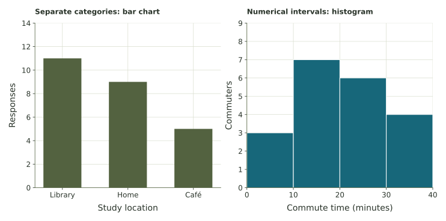
A bar chart's categories can often be rearranged. Histogram intervals follow numerical order. For a few separate numerical counts, such as books read, a bar chart can also be useful. Use a histogram when the task asks you to group measurements into intervals.
For a bar chart, begin the height axis at zero to compare counts or percentages fairly. This chapter uses equal-width histogram bins, for which bar heights may represent counts or relative frequencies. Unequal widths call for a different height convention based on density.
Which display fits preferred lunch location? Which fits commuting time grouped into 15-minute intervals?
Compare your reasoning
Use a bar chart for the separate lunch-location categories. Use a histogram for the numerical travel-time intervals.
Reading histogram intervals
The bin \([20,25)\) means “20 up to, but not including, 25.” The square bracket includes the endpoint; the parenthesis leaves it out.
Here x stands for one recorded value. The symbols say that x is at least 20 and less than 25. A value of 25 goes into the next bin, \([25,30)\). This rule prevents counting a boundary value twice.
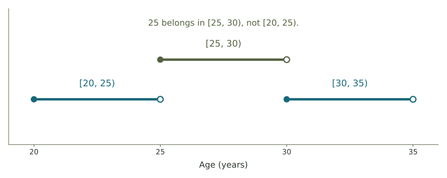
Placing values in bins
For times 4, 9, 10, 16, 22, and 29 minutes, the bins [0,10), [10,20), [20,30) each contain two observations. The value 10 belongs in the second bin.
The same data can look quite different with wider or narrower bins. Bin widths are worth checking when comparing two histograms.
Where do 29, 30, and 35 belong in the bins [25,30), [30,35), [35,40)?
Compare your reasoning
29 goes in [25,30), 30 in [30,35), and 35 in [35,40). Each value is counted once.
From observed shares to a model of chance
When we randomly choose one answer from the 25 study-location responses, the chance of choosing a library answer is exactly 11/25. When we use that share to describe all students at the college, it is an estimate. Its usefulness depends on how well the survey reaches that larger group.
Probability can also come from a stated mathematical model rather than a survey. For example, a bag contains 4 red, 3 blue, and 5 green marbles. Assume each individual marble is equally likely to be drawn.
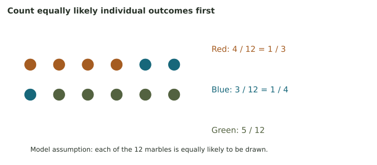
Counting the marbles
There are 12 marbles in all. The model gives P(red) = 4/12 = 1/3, P(blue) = 3/12 = 1/4, and P(green) = 5/12. The letter P means “probability of.” The words inside parentheses say which outcome we mean.
An empirical distribution summarizes observed frequencies. A theoretical distribution gives probabilities from a model, such as a fair die. Comparing the two shows how closely the observations match the model.
A fair die assigns probability 1/6 to a four. In 12 actual rolls, four appears once. Are the model probability and observed relative frequency the same number?
Compare your reasoning
No. The model probability is 1/6; this sample’s relative frequency is 1/12. A small sample does not have to match the model exactly.
A probability distribution accounts for every possibility
A probability distribution lists possible outcomes and gives each a probability. For the finite lists in this week’s work, two rules matter: every probability lies between 0 and 1, and all the probabilities add to 1.
The outcomes must cover every possibility without overlap. For one spin labeled A, B, or C, exactly one of those outcomes occurs. If their probabilities are 0.20, 0.30, and 0.50, the total is 1.
| Outcome | Probability | Meaning in the model |
|---|---|---|
| A | 0.20 | 20% of the probability |
| B | 0.30 | 30% of the probability |
| C | 0.50 | 50% of the probability |
| Total | 1.00 | All possibilities |
Within this finite model, 0 assigns no chance to an outcome and 1 assigns all the chance. But seeing zero occurrences in a small sample does not establish that an outcome is impossible in the real process.
Finding a missing probability
Suppose three outcomes have probabilities 0.18, 0.47, and p. The first two use 0.65 of the total. The missing probability is p = 1 − 0.65 = 0.35.
The notation \(p_i\) represents the probability of outcome i. The expression \(\sum p_i=1\) means that the probabilities of all outcomes add to 1.
Can 0.45, 0.35, and 0.30 form the complete probability distribution for three separate outcomes?
Compare your reasoning
No. They add to 1.10, which assigns more than the whole probability. Nonnegative entries alone are not enough.
Events, “or,” and “not”
An event can include several outcomes. For a die, “an even result” includes 2, 4, and 6. Add probabilities when the listed alternatives cannot happen together on the same trial.
Example: even results on a die
For one fair die, P(even) = P(2) + P(4) + P(6) = 3/6 = 1/2. A single roll cannot be both 2 and 4, so these outcomes do not overlap.
The complement of an event is everything outside it: “not that event.” Together, an event and its complement cover the whole probability.
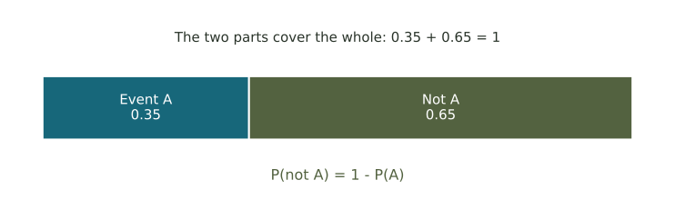
An 'at least one' probability
If P(zero late deliveries) = 0.60, then P(at least one late delivery) = 1 − 0.60 = 0.40. We can calculate this by subtracting the probability of zero late deliveries from 1.
Some events overlap. For example, 'even' and 'greater than 3' both include 4 and 6. Those outcomes count only once when finding the probability of either event.
For one fair die, find the probability of 1 or 2, then the probability of neither 1 nor 2.
Compare your reasoning
P(1 or 2) = 2/6 = 1/3. The complement has probability 1 − 1/3 = 2/3, covering 3, 4, 5, and 6.
Counting outcomes with two dice
Assume two fair six-sided dice are rolled independently: the result of one does not change the chances for the other. Imagine one die is red and the other blue so we can keep their roles separate.
There are 6 choices for the first die and 6 for the second, giving 6 × 6 = 36 equally likely ordered pairs. The pair (1,6) is different from (6,1), even though both have sum 7.
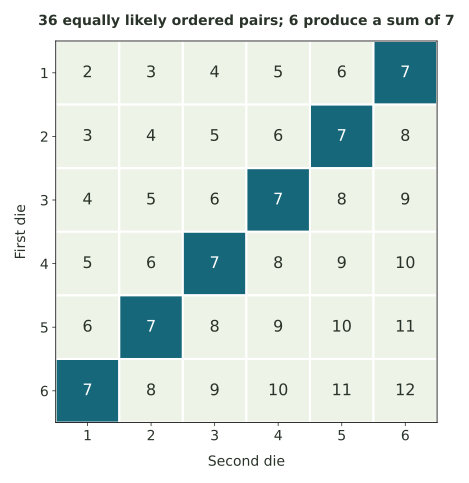
Probabilities of the sums
A sum of 2 comes only from (1,1), so its probability is 1/36. A sum of 7 comes from six pairs: (1,6), (2,5), (3,4), (4,3), (5,2), (6,1). Its probability is 6/36 = 1/6.
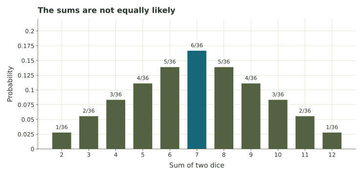
How many pairs produce a sum of 11, and what is its probability?
Compare your reasoning
The pairs are (5,6) and (6,5). The probability is 2/36 = 1/18. Of the 36 equally likely pairs, two have sum 11.
Probability and repeated trials
For a fair coin, heads and tails each have probability 0.50. Ten flips may produce more or fewer than five heads, including several heads in a row.
In repeated independent trials with the same probabilities, relative frequencies tend to settle closer to the model probabilities as the number of trials grows. They can still move farther away at a particular step. After a run of heads, a fair independent coin still has probability 0.50 of heads on the next flip.
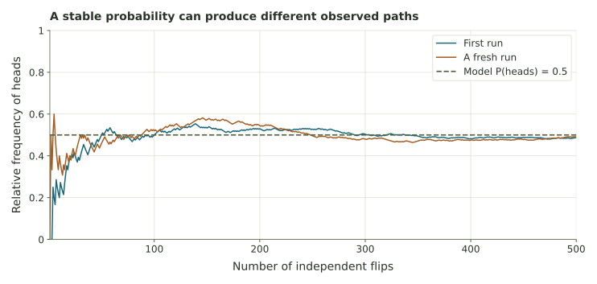
Expected counts
If a fixed process has probability 0.30 of a particular outcome, then across 200 trials its expected count is 200 × 0.30 = 60. The expected count is 60, though an individual run may have a different count.
The repeated-trial explorer keeps the model probabilities fixed while collecting new simulated observations. Compare the observed shares with those probabilities. The next-token application uses these ideas to study the next token in a sentence.
A fixed model gives an outcome probability 0.10. What count is expected in 50 independent trials? Must the actual count equal it?
Compare your reasoning
The expected count is 50 × 0.10 = 5. A particular run can have a different count.
Interpreting a distribution
A distribution describes how observations or probability are spread across possibilities. For numerical data, look for where values cluster, how widely they spread, and which direction a tail extends.
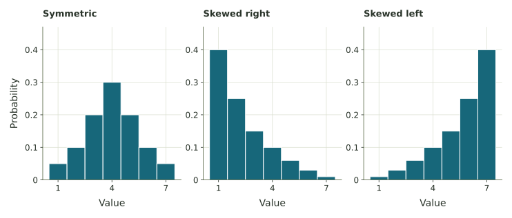
The tallest bar identifies a most common category or interval. That interval may contain less than half the observations. Week 3 develops different ways to describe a center and a spread.
What a survey result tells us
“Eleven students chose the library” reports a count. “44% of these respondents chose the library” reports a sample share. “We estimate that 44% of all students prefer the library” makes a claim about a larger population. Whether the last estimate is useful depends on how the students were sampled.
A distribution is useful only with a clearly specified group and outcome. A statement about the 25 respondents is exact for those responses; extending the same percentage to an entire college requires a sampling argument. Knowing what was counted is as important as doing the division.
A category is the tallest bar at 40%. Is it a majority? What extra information would you want before applying that share to a whole town?
Compare your reasoning
40% can be the largest category without being a majority; a majority means more than 50%. We would need to know the population being studied, how respondents were selected, and who was left out or did not answer.
Practice and activities
Use the explorer to compare counts and simulated trials. The laboratory covers sampling, tables, graphs, and complements. The transportation survey applies the ideas to a planning question.
Further reading: OpenStax on data and sampling and histograms.